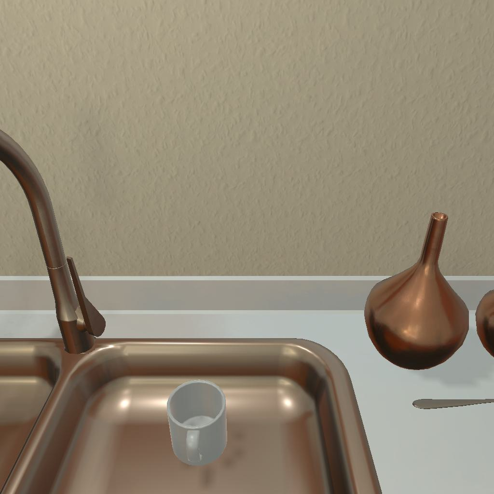

---------------------------------------------------------task: 17---------------------------------------------------------
--------------------------------------------------------------------------------------------------------------------------------------------------------------------
--------------------------------------------------------------------------------------------------------------------------------------------------------------------
Step:--------------------------------------------------------------------------0-------------------------------------------------------------------------------
----------------------------------------
VLM Prompt:
Image1:
**Instruction**
1. Analyze the provided images to identify all visible household objects and compare the difference between images (e.h. whether the object is opened or not and taken on hand or not), focusing on those relevant to the task description "put a cool pan in stoveburner."
2. Use the analysis of images and the task hint "The agent must find an object of the desired type, pick it up, go to a fridge, cool the object with the fridge, then find the correct location to place it, and put it down there. The agent does not need to use the fridge button or open the fridge to cool the object, and the agent just needs to do action that is "cool the object with the fridge"." to answer the question: what is the most reasonable action in the choices for the task description "put a cool pan in stoveburner"?
3. Decide and write the answer using the template: The answer is: (i): , where i is the real number. If there is no desired object in images, search every place based on **Initial Observation** to find the object. And if no one is exactly correct, choose a similar answer.
**Initial Observation**
You are in the middle of a room. Looking quickly around you, you can see cabinet (1-14), countertop (1-2), microwave (1), drawer (1-5), sink (1), sinkbasin (1), coffeemachine (1), stoveburner (1-4), toaster (1), fridge (1), diningtable (1), garbagecan (1), safe (1)
**Answer Choices**
(1): go to cabinet 1
(2): go to cabinet 2
(3): go to cabinet 3
(4): go to countertop 1
(5): go to cabinet 4
(6): go to cabinet 5
(7): go to microwave 1
(8): go to cabinet 6
(9): go to drawer 1
(10): go to drawer 2
(11): go to drawer 3
(12): go to cabinet 7
(13): go to cabinet 8
(14): go to sink 1
(15): go to sinkbasin 1
(16): go to coffeemachine 1
(17): go to cabinet 9
(18): go to cabinet 10
(19): go to drawer 4
(20): go to cabinet 11
(21): go to stoveburner 1
(22): go to stoveburner 2
(23): go to stoveburner 3
(24): go to stoveburner 4
(25): go to cabinet 12
(26): go to toaster 1
(27): go to drawer 5
(28): go to countertop 2
(29): go to fridge 1
(30): go to cabinet 13
(31): go to cabinet 14
(32): go to diningtable 1
(33): go to garbagecan 1
(34): go to safe 1
**Answer**
Let's think step by step by following the instructions.
----------------------------------------
----------------------------------------
Original Response:
Firstly, we need to find a pan to put on the stove burner. The image provided does not show any pans, so we cannot use it to identify the location of a pan. Therefore, we must search every place based on the Initial Observation to find the object.
The locations where a pan is most likely to be found in a typical household are in cabinets, drawers, or possibly on the countertop if it has been recently used. Since the task description specifies "put a cool pan in stoveburner," we can assume the pan is not currently on the stoveburner.
Based on the Initial Observation, the most reasonable locations to search for a pan would be in cabinets or drawers near the stoveburner. Once the pan is found, we would then go to the fridge to cool the object, as per the task hint.
Considering the options given, we should check the cabinets and drawers first. Therefore, the most reasonable actions from the choices provided would be:
(1): go to cabinet 1
(2): go to cabinet 2
(3): go to cabinet 3
(5): go to cabinet 4
(6): go to cabinet 5
(8): go to cabinet 6
(9): go to drawer 1
(10): go to drawer 2
(11): go to drawer 3
(12): go to cabinet 7
(13): go to cabinet 8
(17): go to cabinet 9
(18): go to cabinet 10
(19): go to drawer 4
(20): go to cabinet 11
(25): go to cabinet 12
(27): go to drawer 5
(30): go to cabinet 13
(31): go to cabinet 14
Since we cannot know which specific cabinet or drawer the pan is in without more information, we must select one of these as the most reasonable action. We should start with the cabinets and drawers closest to the stoveburner for efficiency.
The answer is: It is not possible to determine the exact action without more information. However, the most reasonable action would be to start searching the cabinets and drawers closest to the stoveburner, such as (1): go to cabinet 1, (9): go to drawer 1, or (10): go to drawer 2.
----------------------------------------
----------------------------------------
>>> Refine Original VLM Response and Get Pure Action: go to cabinet 1, (9): go to drawer 1, or (10): go to drawer 2
----------------------------------------
-----------------------------------------------------------------
Running time: 14.931073665618896 seconds
Total Money: 9.840380000000005
-----------------------------------------------------------------
-----------------------------------------------------------------
Text Observation:Nothing happens.
-----------------------------------------------------------------
UNSUCCEED